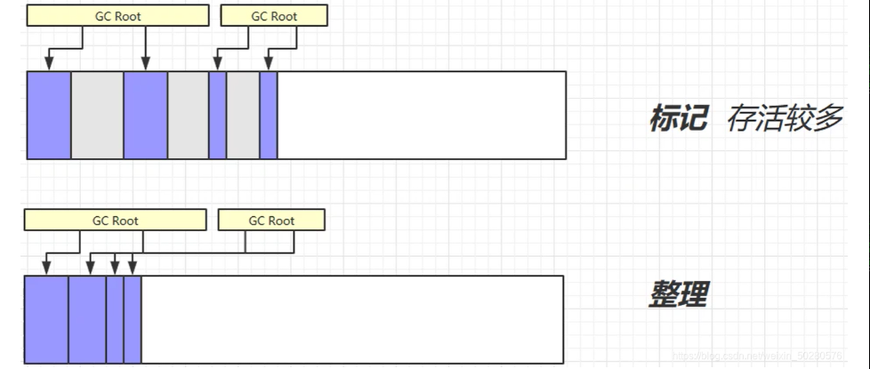
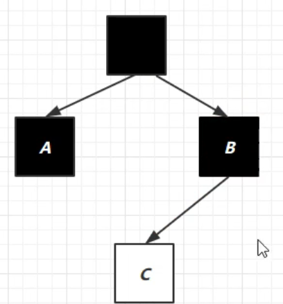

黑马JVM学习
JVM内存结构
程序计数器
Program Counter Register 程序计数器（寄存器）
作用：是记录下一条 jvm 指令的执行地址行号。
特点：
- 线程私有
- 不会溢出
如下是一段字节码指令，注释对应的具体的代码块：
1 | 0: getstatic #20 // PrintStream out = System.out; |
- 以上这些指令，存储在CPU的寄存器中；程序计数器会记录下一条指令的地址行号，这样下一次解释器会从程序计数器拿到指令然后进行解释执行。
- 解释器会解释以上这些指令为机器码交给 cpu 执行
虚拟机栈
概念：
- 栈：每个线程运行时需要的内存空间，就叫虚拟机栈；每个线程独有一份；每个线程有一个活动栈帧，只能执行一个方法
- 栈帧：栈内有多个栈帧，每个栈帧对应一个方法，里面存储了方法的局部变量等
常见问题
- 垃圾回收是否涉及栈内存？
不会。栈内存是方法调用产生的，方法调用结束后会弹出栈。
- 栈内存分配越大越好吗？
不是。因为物理内存是一定的，栈内存越大，可以支持更多的递归调用，但是可执行的线程数就会越少。
- 方法里的局部变量是否线程安全
- 局部变量逃离了方法的作用范围，就会有。例如：引用传参、返回值、外部引用等等
StackOverFlow
出现情况
- 栈帧过大
- 递归调用
- 第三方类库引用：如循环引用
线程运行诊断
CPU占用分析
Linux 环境下运行某些程序的时候，可能导致 CPU 的占用过高，这时需要定位占用 CPU 过高的线程
- top命令，查看是哪个进程占用 CPU 过高；记住进程号pid，用于下面命令
ps H -eo pid,tid,%cpu | grep，通过 ps 命令进一步查看是哪个线程占用 CPU 过高- 利用
jstack pid，找到对应的线程，查看执行情况
死锁分析
通过jstack命令定位。
找到两个线程对应的执行代码位置。
本地方法栈
一些带有 native 关键字的方法就是需要 JAVA 去调用本地的C或者C++方法，因为 JAVA 有时候没法直接和操作系统底层交互，所以需要用到本地方法栈，服务于带 native 关键字的方法。
堆
存放对象：通过new关键字创建的对象都会被放在堆内存
特点：
- 线程共享
- 有gc机制
堆内存溢出
java.lang.OutofMemoryError ：java heap space. 堆内存溢出
- 可以使用 -Xmx 来指定堆内存大小
堆内存诊断
- jps 工具 查看当前系统中有哪些 java 进程
- jmap 工具 查看堆内存占用情况
jmap - heap 进程id - jconsole 工具 图形界面的，多功能的监测工具，可以连续监测
- jvisualvm 工具
StringTable
定义：是一个记录字符督串的常量表（哈希表）， 可利用这样一个串池，避免重复创建相同的字符串对象。
- 常量池中的字符串仅是符号，符合懒加载机制，被用到以后会转化为字符串对象
- 字符串对象拼接的原理：StringBuilder
- 字符串常量拼接的原理：编译器优化。编译时期将字符串合并
- 使用intern方法，主动将不在串池中的字符串对象放入串池中
是否会垃圾回收：是
intern方法
1.8版本：调用字符串对象的 intern 方法，会将该字符串对象尝试放入到串池中
- 如果串池中没有该字符串对象，则放入成功
- 如果有该字符串对象，则放入失败；无论放入是否成功，都会返回串池中的字符串对象
1 | public class Main { |
- 引用关系：str2 -> str（串池） -> "ab"（堆中） str3 -> str
1 | public class Main { |
- 引用关系： str2 -> str3(串池) -> "ab"(1) str -> "ab"(2)
位置
1.8版本：
1.6版本以下：
调优
因为StringTable是由HashTable实现的，所以可以适当增加HashTable桶的个数，来减少字符串放入串池所需要的时间
1 | -XX:StringTableSize=桶个数（最少设置为 1009 以上） |
方法区
Java 虚拟机有一个在所有 Java 虚拟机线程之间共享的方法区域。方法区域类似于 用于传统语言的编译代码的存储区域，或者类似于操作系统进程中的 “文本” 段。
- 内容：它存储每个类的结构，例如运行时常量池、字段和方法数据，以及方法和构造函数的代码，包括特殊方法，用于类和实例初始化以及接口初始化
- 创建时机：方法区域是在虚拟机启动时创建的。
- 实现：尽管方法区域在逻辑上是堆的一部分，但简单的实现可能不会选择垃圾收集或压缩它。此规范不强制指定方法区的位置或用于管理已编译代码的策略。方法区域可以具有固定的大小，或者可以根据计算的需要进行扩展，并且如果不需要更大的方法区域，则可以收缩。方法区域的内存不需要是连续的！ 不同的虚拟机有不同的实现
运行时常量池
二进制字节码包含（类的基本信息，常量池，类方法定义，包含了虚拟机的指令）
反编译如下代码：
1 | public class Test { |
得到：
- 红框内的就是在常量表中的地址
常量池
就是一张表，虚拟机指令根据这张常量表找到要执行的类名、方法名、参数类型、字面量信息
运行时常量池
常量池是 *.class 文件中的，当该类被加载以后，它的常量池信息就会放入运行时常量池，并把里面的符号地址变为真实地址
直接内存
应用场景：NIO 操作时，用于数据缓冲区bytebuffer
特点：
- 分配回收成本较高，但读写性能高
- 不受JVM垃圾回收管理
优势-文件读写
正常文件读写流程
因为 java 不能直接操作文件管理，需要切换到内核态，使用本地方法进行操作，然后读取磁盘文件，会在系统内存中创建一个缓冲区，将数据读到系统缓冲区， 然后在将系统缓冲区数据，复制到 java 堆内存中。缺点是数据存储了两份，在系统内存中有一份，java 堆中有一份，造成了不必要的复制。
使用了 DirectBuffer 文件读取流程
直接内存是操作系统和 Java 程序共享的一块区域，无需将代码从系统内存复制到 Java 堆内存，从而提高了效率。
回收原理
1 | public class Code_06_DirectMemoryTest { |
直接内存的回收不通过gc垃圾回收，是通过unsafe.freeMemory 来手动释放
Bytebuffer底层实现
allocateDirect 的实现
1
2
3
4public static ByteBuffer allocateDirect(int capacity) {
//创建这个对象
return new DirectByteBuffer(capacity);
}DirectByteBuffer 类
1
2
3
4
5
6
7
8
9
10
11
12
13
14
15
16
17
18
19
20
21
22
23
24
25DirectByteBuffer(int cap) { // package-private
super(-1, 0, cap, cap);
boolean pa = VM.isDirectMemoryPageAligned();
int ps = Bits.pageSize();
long size = Math.max(1L, (long)cap + (pa ? ps : 0));
Bits.reserveMemory(size, cap);
long base = 0;
try {
base = unsafe.allocateMemory(size); // 申请内存
} catch (OutOfMemoryError x) {
Bits.unreserveMemory(size, cap);
throw x;
}
unsafe.setMemory(base, size, (byte) 0);
if (pa && (base % ps != 0)) {
// Round up to page boundary
address = base + ps - (base & (ps - 1));
} else {
address = base;
}
cleaner = Cleaner.create(this, new Deallocator(base, size, cap)); // 通过虚引用，来实现直接内存的释放，this为虚引用的实际对象(bytebuffer), 第二个参数是一个回调，实现了 runnable 接口，run 方法中通过 unsafe 释放内存。
att = null;
}
Cleaner.create方法
1
public class Cleaner extends PhantomReference<Object>
这个方法是创建一个虚引用的对象，底层是一个双向链表连起来；
虚拟机后台会对虚引用的对象监测，如果虚引用的实际对象（这里是 DirectByteBuffer ）被回收以后就会调用 Cleaner 的 clean 方法，来清除直接内存中占用的内存：
1
2
3
4
5
6
7
8
9
10
11
12
13
14
15
16
17
18
19
20
21
22
23
24
25
26
27
28
29
30
31
32
33
34
35
36
37
38
39
40
41
42
43
44
45
46public void clean() {
if (remove(this)) {
try {
//如果remove成功，调用thunk线程的run方法执行，这个run方法是前面DirectByteBuffer的构造方法传入进来，通过Cleaner.create方法传入
this.thunk.run();
} catch (final Throwable var2) {
AccessController.doPrivileged(new PrivilegedAction<Void>() {
public Void run() {
if (System.err != null) {
(new Error("Cleaner terminated abnormally", var2)).printStackTrace();
}
System.exit(1);
return null;
}
});
}
}
}
//真正从链表中移除
private static synchronized boolean remove(Cleaner var0) {
if (var0.next == var0) {
return false;
} else {
if (first == var0) {
if (var0.next != null) {
first = var0.next;
} else {
first = var0.prev;
}
}
if (var0.next != null) {
var0.next.prev = var0.prev;
}
if (var0.prev != null) {
var0.prev.next = var0.next;
}
var0.next = var0;
var0.prev = var0;
return true;
}
}this.thunk.run()方法
1
2
3
4
5
6
7
8
9
10
11
12
13
14
15
16
17
18
19
20
21
22
23
24
25
26
27
28
29private static class Deallocator
implements Runnable
{
private static Unsafe unsafe = Unsafe.getUnsafe();
private long address;
private long size;
private int capacity;
private Deallocator(long address, long size, int capacity) {
assert (address != 0);
this.address = address;
this.size = size;
this.capacity = capacity;
}
//真正执行回收的方法
public void run() {
if (address == 0) {
// Paranoia
return;
}
unsafe.freeMemory(address);
address = 0;
Bits.unreserveMemory(size, capacity);
}
}
禁用显示回收
System.gc()方法，在jvm调优的时候尽量设置 -XX:+DisableExplicitGC
GC垃圾回收机制
JVM之所以能够帮我们管理对象的回收操作，不用我们手动释放对象的内存，就是靠JVM的垃圾回收。
判断回收条件
引用计数法
概念：当一个对象被引用时，这个对象的引用计数器 + 1，值为0表示不在被引用，直接清除
缺陷：循环引用问题
- 两个对象的计数都为1，导致两个对象都无法被释放。
5种引用类型
强引用
所有 GC Roots 对象都不通过【强引用】引用该对象，该对象才能被垃圾回收
软引用
仅有软引用引用该对象时，在垃圾回收后，内存仍不足时会再次出发垃圾回收，回收软引用对象，可以配合引用队列来释放软引用自身
弱引用
仅有弱引用引用该对象时，在垃圾回收时，无论内存是否充足，都会回收弱引用对象，可以配合引用队列来释放弱引用自身。
ThreadLocal内存泄露
线程内部实际拥有的是Entry，ThreadLocal只是对这个Entry的K的一个引用，但是获取这个Entry的Value的途径还是通过K获取。
突然我们ThreadLocal是null了，也就是要被垃圾回收器回收了，但是此时我们的ThreadLocalMap（thread 的内部属性）生命周期和Thread的一样，它不会回收，这时候就出现了一个现象。那就是ThreadLocalMap的key没了，但是value还在，这就造成了内存泄漏。
虚引用
必须配合引用队列使用，主要配合 ByteBuffer 使用，被引用对象回收时，会将虚引用入队，由 Reference Handler 线程调用虚引用相关方法释放直接内存
终结器引用
无需手动编码，但其内部配合引用队列使用，在垃圾回收时，终结器引用入队（被引用对象暂时没有被回收），再由 Finalizer 线程通过终结器引用找到被引用对象并调用它的 finalize（已重写） 方法，第二次 GC 时才能回收被引用对象。
可达性分析法
JVM 中的垃圾回收器通过可达性分析来探索所有存活的对象。
jvm会定时去搜索扫描堆中的对象，沿着GC root的引用链搜寻，搜寻到的对象不被清除，没有搜寻到也就是没有被GC root引用链串起来的对象会被垃圾回收。
可以作为GC root的对象
- 虚拟机栈（栈帧中的本地变量表）中引用的对象。
- 方法区中类静态属性引用的对象
- 方法区中常量引用的对象
- 本地方法栈中 JNI（即一般说的Native方法）引用的对象
Eclipse Memory Analyzer工具查看
使用 jps 命令，查看程序的进程
使用
jmap -dump:format=b,live,file=1.bin 进程id命令转储文件- dump：转储文件
- format=b：二进制文件
- file：文件名
打开 Eclipse Memory Analyzer 对 1.bin 文件进行分析
垃圾回收算法
标记-清除
对标记的对象直接清除
优点：
- 速度快
缺点：
- 会产生内存碎片
标记-整理
清除完之后，会把存活的对象的内存地址重新整理，排列整齐，保证不出现内存碎片问题，但是效率比较慢。
存活对象比较多的话，整理起来耗时，占用CPU，甚至出现用户程序阻塞的问题。

标记-复制
一种空间换时间的思想，两段空间，省去了整理对象的用时，同时能保证对象复制到另一半内存空间之后不会产生内存碎片。
分代回收
- 新的对象首先分配在eden区 ，其中 新生代区域还包括幸存区（from、to）
- 新生代空间不足时，触发minor gc
- Minor GC： 把eden区和from区存活的对象移动到to区，并且对应的存活年龄 + 1
- 引发stop the world：暂停其他线程，等垃圾回收结束后，恢复用户线程运行
- 存活年龄：用四个比特位标识，最大15，当年龄到达15就会被送到老年代
- 当老年代空间不足时，会先触发 minor gc，如果空间仍然不足，那么就触发 full gc ，STW停止的时间更长。
- 当最后一次full GC以后，老年代依旧没内存，整个内存空间满了，就会触发OOM异常
GC调优参数
| 含义 | 参数 |
|---|---|
| 堆初始大小 | -Xms |
| 堆最大大小 | -Xmx 或 -XX:MaxHeapSize=size |
| 新生代大小 | -Xmn 或 (-XX:NewSize=size + -XX:MaxNewSize=size ) |
| 幸存区比例（动态） | -XX:InitialSurvivorRatio=ratio 和 -XX:+UseAdaptiveSizePolicy |
| 幸存区比例 | -XX:SurvivorRatio=ratio |
| 晋升阈值 | -XX:MaxTenuringThreshold=threshold |
| 晋升详情 | -XX:+PrintTenuringDistribution |
| GC详情 | -XX:+PrintGCDetails -verbose:gc |
| FullGC 前 MinorGC | -XX:+ScavengeBeforeFullGC |
垃圾回收器
指标：
- 并行收集：指多条垃圾收集线程并行工作，但此时用户线程仍处于等待状态。
- 并发收集：指用户线程与垃圾收集线程同时工作（不一定是并行的可能会交替执行）。用户程序在继续运行，而垃圾收集程序运行在另一个 CPU 上
- 吞吐量：即 CPU 用于运行用户代码的时间与 CPU 总消耗时间的比值
吞吐量 = 运行用户代码时间 / ( 运行用户代码时间 + 垃圾收集时间 )，也就是。例如：虚拟机共运行 100 分钟，垃圾收集器花掉 1 分钟，那么吞吐量就是 99% 。
串行
适用场景：
- 单线程
- 堆内存较少，适合个人电脑
1 | //老年代新生代都采用 |
优缺点：
- 安全：让其他线程都在这个点停下来，以免垃圾回收时移动对象地址，使得其他线程找不到被移动的对象
- 阻塞：因为是串行的，所以只有一个垃圾回收线程。且在该线程执行回收工作时，其他线程进入阻塞状态
Serial 收集器 Serial 收集器是最基本的、发展历史最悠久的收集器 特点：单线程、简单高效（与其他收集器的单线程相比），采用标记-复制算法。对于限定单个 CPU 的环境来说，Serial 收集器由于没有线程交互的开销，专心做垃圾收集自然可以获得最高的单线程收集效率。收集器进行垃圾回收时，必须暂停其他所有的工作线程，直到它结束（Stop The World）
ParNew 收集器 ParNew 收集器其实就是 Serial 收集器的多线程版本 特点：多线程、ParNew 收集器默认开启的收集线程数与CPU的数量相同，在 CPU 非常多的环境中，可以使用 -XX:ParallelGCThreads 参数来限制垃圾收集的线程数。和 Serial 收集器一样存在 Stop The World 问题
Serial Old 收集器 Serial Old 是 Serial 收集器的老年代版本 特点：同样是单线程收集器，采用标记-整理算法
吞吐量优先
适用场景：
- 多线程
- 适用于堆内存较大，多核 cpu
- 目的：让单位时间内，STW 的时间最短
1 | -XX:+UseParallelGC ~ -XX:+UsePrallerOldGC |
Parallel Scavenge 收集器 与吞吐量关系密切，故也称为吞吐量优先收集器 特点：属于新生代收集器也是采用复制算法的收集器（用到了新生代的幸存区），又是并行的多线程收集器（与 ParNew 收集器类似）
该收集器的目标是达到一个可控制的吞吐量。还有一个值得关注的点是：GC自适应调节策略（与 ParNew 收集器最重要的一个区别）
- GC自适应调节策略：Parallel Scavenge 收集器可设置 -XX:+UseAdptiveSizePolicy 参数。当开关打开时不需要手动指定新生代的大小（-Xmn）、Eden 与 Survivor 区的比例（-XX:SurvivorRation）、晋升老年代的对象年龄（-XX:PretenureSizeThreshold）等，虚拟机会根据系统的运行状况收集性能监控信息，动态设置这些参数以提供最优的停顿时间和最高的吞吐量，这种调节方式称为 GC 的自适应调节策略。
Parallel Scavenge 收集器使用两个参数控制吞吐量：
- XX:MaxGCPauseMillis=ms 控制最大的垃圾收集停顿时间（默认200ms）
- XX:GCTimeRatio=rario 直接设置吞吐量的大小
Parallel Old 收集器
- 是 Parallel Scavenge 收集器的老年代版本
- 特点：多线程，采用标记-整理算法（老年代没有幸存区）
响应时间优先
特点：
- 多线程
- 适用于堆内存较大，多核 cpu
- 尽可能让 STW 的单次时间最短
1 | -XX:+UseConcMarkSweepGC ~ -XX:+UseParNewGC ~ SerialOld |
CMS 收集器
Concurrent Mark Sweep，一种以获取最短回收停顿时间为目标的老年代收集器
特点：
- 基于标记-清除算法实现。
- 并发收集、低停顿，但是会产生内存碎片
应用场景：适用于注重服务的响应速度，希望系统停顿时间最短，给用户带来更好的体验等场景下。如 web 程序、b/s 服务
CMS 收集器的运行过程分为下列4步：
- 初始标记：标记 GC Roots 能直接到的对象。速度很快但是仍存在 Stop The World 问题。
- 并发标记：进行 GC Roots Tracing 的过程，找出存活对象且用户线程可并发执行。
- 重新标记：为了修正并发标记期间因用户程序继续运行而导致标记产生变动的那一部分对象的标记记录。仍然存在 Stop The World 问题
- 并发清除：对标记的对象进行清除回收，清除的过程中，可能任然会有新的垃圾产生，这些垃圾就叫浮动垃圾，如果当用户需要存入一个很大的对象时，新生代放不下去，老年代由于浮动垃圾过多，就会退化为 serial Old 收集器，将老年代垃圾进行标记-整理，当然这也是很耗费时间的
CMS 收集器的内存回收过程是与用户线程一起并发执行的，可以搭配 ParNew 收集器（多线程，新生代，复制算法）与 Serial Old 收集器（单线程，老年代，标记-整理算法）使用。
G1
特征
- 同时注重吞吐量和低延迟（响应时间）
- 超大堆内存（内存大的），会将堆内存划分为多个大小相等的区域Region
- 整体上是标记-整理算法，两个区域之间是复制算法
JDK8 并不是默认开启的，所需要参数开启
1 | -XX:+UseG1GC |
垃圾回收阶段
- Young Collection：对新生代垃圾收集
- Young Collection + Concurrent Mark：如果老年代内存到达一定的阈值了，新生代垃圾收集同时会执行一些并发的标记。
- Mixed Collection：会对新生代 + 老年代 + 幸存区等进行混合收集，然后收集结束，会重新进入新生代收集。
Young Collection
分区是将堆空间划分连续几个不同小区间，每一个小区间独立回收，可以控制一次回收多少个小区间，方便控制 GC 产生的停顿时间！
每个小区间可以代表：E：eden，S：幸存区，O：老年代

注意：会产生STW
跨代引用
老年代可能有老年对象引用了新生代对象（卡表），这样可以使新生代对象不被回收
卡表&Remembered Set
- Remembered Set 存在于E中，用于保存新生代对象对应的脏卡
- 脏卡：O 被划分为多个区域（一个区域512K），如果该区域引用了新生代对象，则该区域被称为脏卡
Young Collection + CM
老年代占用堆空间比例达到阈值时，进行并发标记（不会STW），由 JVM 参数决定 -XX:InitiatingHeapOccupancyPercent=percent （默认45%）
Mixed Collection
会对 E S O 进行全面的回收，阶段分为：最终标记、拷贝存活的对象（都会产生STW）
Full GC
G1 在老年代内存不足时（老年代所占内存超过阈值）
- 如果垃圾产生速度慢于垃圾回收速度，不会触发 Full GC，还是并发地进行清理
- 如果垃圾产生速度快于垃圾回收速度，便会触发 Full GC，然后退化成 serial Old 收集器串行的收集，就会导致停顿的时候长。
Remark
三色标记法：
- 黑色：已被处理，需要保留的
- 灰色：正在处理中的
- 白色：还未处理的
并发标记问题：

这时，B断掉与C的引用，但是与此同时，A打算引用C，这时会引发Remark：
之前 C 未被引用，这时 A 引用了 C ，就会给 C 加一个写屏障，写屏障的指令会被执行，将 C 放入一个队列当中，并将 C 变为 处理中状态，也就是灰色
在并发标记阶段结束以后，重新标记阶段会 STW ，然后将放在该队列中的对象重新处理，发现有强引用引用它，就会处理它，由灰色变成黑色。

优化
字符串去重
过程：
- 将所有新分配的字符串（底层是 char[] ）放入一个队列
- 当新生代回收时，G1 并发检查是否有重复的字符串
- 如果字符串的值一样，就让他们引用同一个char数组
注意，其与 String.intern() 的区别
- String.intern() 关注的是字符串对象
- 字符串去重关注的是 char[]
- 在 JVM 内部，使用了不同的字符串标
巨型对象的回收
- 一个对象大于region的一半时，就称为巨型对象
- G1不会对巨型对象进行拷贝
- 回收时被优先考虑
- G1会跟踪老年代所有incoming（卡表）引用，如果老年代incoming引用为0的巨型对象就可以在新生代垃圾回收时处理掉
gc调优
查看虚拟机参数命令
1 | D:\JavaJDK1.8\bin\java -XX:+PrintFlagsFinal -version | findstr "GC" |
可以根据参数去查询具体的信息
调优领域
- 内存
- 锁竞争
- cpu 占用
- io
- gc
目标 低延迟/高吞吐量 ？ 选择合适的GC
CMS G1 ZGC
ParallelGC
Zing
最快的 GC
首先排除减少因为自身编写的代码而引发的内存问题，不产生GC就是最快的GC
查看 Full GC 前后的内存占用，考虑以下几个问题
数据是不是太多？
- 例如：
resultSet = statement.executeQuery(“select * from 大表 limit n”)从数据库中一下子取出众多数据放到内存中，肯定会引起堆内存紧张
- 例如：
数据表示是否太臃肿
对象图
对象大小 16byte 例如 Integer 是24字节，非必要可以转化成 int 类型，只占用4byte
是否存在内存泄漏
static Map map …
软
弱
第三方缓存实现
新生代调优
新生代的特点
所有的 new 操作分配内存都是非常廉价的
- 为了防止多线程并发访问某一内存块，采用TLAB thread-lcoal allocation buffer 单独的给每个线程提供私有空间
死亡对象回收零代价
大部分对象用过即死（朝生夕死）
Minor GC 所用时间远小于 Full GC
新生代内存越大越好么？
不是
- 新生代内存太小：频繁触发 Minor GC ，会 STW ，会使得吞吐量下降
- 新生代内存太大：老年代内存占比有所降低，会更频繁地触发 Full GC。而且触发 Minor GC 时，清理新生代所花费的时间会更长
新生代内存设置为能容纳
[并发量*(单次请求->响应 产生的对象大小)] 的数据为宜
幸存区需要能够保存 当前活跃对象 + 需要晋升的对象
- 晋升阈值配置得当，让长时间存活的对象尽快晋升
1 | -XX:MaxTenuringThreshold=threshold |
老年代调优
CMS
CMS 的老年代内存越大越好，先尝试不做调优
如果没有 Full GC 那么内存已经够用，否则先尝试调优新生代。
当观察发现 Full GC 时老年代内存占用，将老年代内存预设调大 1/4 ~ 1/3
1
-XX:CMSInitiatingOccupancyFraction=percent
案例
案例1：Full GC 和 Minor GC 频繁
案例2：请求高峰期发生 Full GC，单次暂停时间特别长（CMS）
案例3：老年代充裕情况下，发生 Full GC（jdk1.7）
字节码技术
类文件结构
通过 javac 类名.java 编译 java 文件后，会生成一个 .class 的文件，以下是字节码文件：
1 | 0000000 ca fe ba be 00 00 00 34 00 23 0a 00 06 00 15 09 |
根据 JVM 规范，字节码文件结构如下：
1 | u4 magic -- 前四个字节的魔数，不同的东西有不同的魔数 |
字节码指令
javap工具
1 | javap -v D:Demo.class |
图解案例
赋值基础运算
代码如下：
1 | public class Demo3_1 { |
编译后的字节码文件：
1 | Classfile /root/Demo3_1.class |
常量池载入运行时常量池
将静态变量放到常量池中，其实常量池也属于方法区，单独抽出来了。
方法字节码载入方法区
main 线程开始运行，分配栈帧内存
（stack=2，locals=4）对应操作数栈有 2 个空间（每个空间 4 个字节），局部变量表中有 4 个槽位。
执行引擎执行代码
- bipush 10
- 将一个 byte 压入操作数栈（其长度会补齐 4
个字节），类似的指令还有
- sipush 将一个 short 压入操作数栈（其长度会补齐 4 个字节）
- ldc 将一个 int 压入操作数栈
- ldc2_w 将一个 long 压入操作数栈（分两次压入，因为 long 是 8 个字节）
- 这里存在于short范围内的数字都是和字节码指令存在一起，超过 short 范围的数字存入了常量池
- 将一个 byte 压入操作数栈（其长度会补齐 4
个字节），类似的指令还有
- istore 1
- 将操作数栈栈顶元素弹出，放入局部变量表的 slot 1 中，对应代码中的 a = 10
- ldc #3
- 读取运行时常量池中 #3 ，即 32768 (超过 short 最大值范围的数会被放到运行时常量池中)，将其加载到操作数栈中，编译期已经做了编译优化，进行了计算。
- istore 2
- 将操作数栈中的元素弹出，放到局部变量表的 2 号位置

- iload1 iload2
- 将局部变量表中 1 号位置和 2 号位置的元素放入操作数栈中。因为只能在操作数栈中执行运算操作
- iadd
- 将操作数栈中的两个元素弹出栈并相加，结果在压入操作数栈中。
- istore 3
- 将操作数栈中的元素弹出，放入局部变量表的3号位置
- getstatic #4
- 在运行时常量池中找到#4，发现是一个对象，在堆内存中找到该对象，并将其引用放入操作数栈中
- iload 3
- invokevirtual 5
- 找到常量池 #5 项
- 定位到方法区
java/io/PrintStream.println:(I)V方法 - 生成新的栈帧（分配 locals、stack等）
- 传递参数，执行新栈帧中的字节码
执行完毕，弹出栈帧
清除 main 操作数栈内容
- return
- 完成 main 方法调用，弹出 main 栈帧
- 程序结束
i++ ++i案例
对于i++，先执行iload，再执行iint，但是只对变量表里变量自增，并不在操作栈更新
对于++i，先执行iint，再执行iload，这样先在变量表更新后的值再放到操作数栈里
x恒等于0
代码如下：
1 | public class Code_11_ByteCodeTest { |
字节码解析如下：
1 | Code: |
构造方法
静态
1 | public class Code_12_CinitTest { |
编译器会按从上至下的顺序，收集所有 static
静态代码块和静态成员赋值的代码，合并为一个特殊的方法
cinit()V ：
1 | stack=1, locals=0, args_size=0 |
对象
1 | public class Code_13_InitTest { |
编译器会按从上至下的顺序，收集所有 {} 代码块和成员变量赋值的代码，形成新的构造方法，但原始构造方法内的代码总是在后.
1 | Code: |
方法调用
不同类型的方法，调用时对应的字节码指令如下：
- 私有、构造、被 final 修饰的方法，在调用时都使用 invokespecial 指令，就是调用特定方法
- 普通成员方法在调用时，使用 invokevirtual 指令。因为编译期间无法确定该方法的内容，只有在运行期间才能确定
- 静态方法在调用时使用 invokestatic 指令
代码
1 | public class Code_14_MethodTest { |
多态原理
因为普通成员方法需要在运行时才能确定具体的内容，所以虚拟机需要调用 invokevirtual 指令，在执行 invokevirtual 指令时，经历了以下几个步骤：
- 先通过栈帧中对象的引用找到对象
- 分析对象头，找到对象实际的 Class
- Class 结构中有 vtable
- 查询 vtable 找到方法的具体地址
- 执行方法的字节码
异常机制
普通try-catch
1 | public static void main(String[] args) { |
字节码文件
1 | Code: |
- [from, to) 是前闭后开（也就是检测 2~4 行）的检测范围
- type 匹配异常类型，如果一致，进入 target 所指示行号
多catch块
1 | public static void main(String[] args) { |
对应的字节码
1 | Code: |
finally
代码1：
1 | public static void main(String[] args) { |
对应字节码：
1 | Code: |
- finally 中的代码被复制了 3 份，分别放入 try 流程，catch 流程以及 catch 剩余的异常类型流程
代码2：
1 | public class Code_18_FinallyReturnTest { |
对应字节码：
1 | Code: |
代码3：
1 | public static int test() { |
对应字节码：
1 | Code: |
类加载
过程
加载
加载规则：
将类的字节码载入方法区（1.8后为元空间，在本地内存中）中，内部采用 C++ 的 instanceKlass 描述 java 类，它的重要 field 有：
_java_mirror 即 java 的类镜像，例如对 String 来说，它的镜像类就是 String.class，作用是把 klass 暴露给 java 使用
_super 即父类
_fields 即成员变量
_methods 即方法
_constants 即常量池
_class_loader 即类加载器
_vtable 虚方法表
_itable 接口方法
优先加载父类
加载和链接可能是交替运行的
instanceKlass 这样的【元数据】是存储在方法区（1.8 后的元空间内），但 **_java_mirror** 是存储在堆中
instanceKlass和_java_mirror（java镜像类）互相保存了对方的地址
类的对象在对象头中保存了 *.class 的地址，让对象可以通过其找到方法区中的instanceKlass，从而获取类的各种信息
链接
验证
验证类是否符合 JVM规范，安全性检查，检查字节码文件中的二进制位。
准备
为 static 变量分配空间，设置默认值
static变量在JDK 7以前是存储与instanceKlass末尾。但在JDK 7以后就存储在_java_mirror末尾了
static变量在分配空间和赋值是在两个阶段完成的。分配空间在准备阶段完成，赋值在初始化阶段完成
如果 static 变量是 final 的基本类型，以及字符串常量，那么编译阶段值就确定了，赋值在准备阶段完成
如果 static 变量是 final 的，但属于引用类型，那么赋值也会在初始化阶段完成
解析
将常量池中的符号引用解析为直接引用
类似linux的符号、物理链接
初始化
初始化即调用
<cinit>()，虚拟机会保证这个类的【构造方法】的线程安全。
触发时机：
main 方法所在的类，总会被首先初始化
首次访问这个类的静态变量或静态方法时
子类初始化，如果父类还没初始化，会引发
子类访问父类的静态变量，只会触发父类的初始化
Class.forName
new 会导致初始化
以下情况不会初始化：
- 访问类的 static final 静态常量（基本类型和字符串）
- 类对象.class 不会触发初始化
- 创建该类对象的数组
- 类加载器的.loadClass方法
- Class.forName的参数2为false时
类加载器
以 JDK 8 为例：
| 名称 | 加载的类路径 | 说明 |
|---|---|---|
| Bootstrap ClassLoader（启动类加载器） | JAVA_HOME/jre/lib | 无法直接访问 |
| Extension ClassLoader(拓展类加载器) | JAVA_HOME/jre/lib/ext | 上级为Bootstrap，显示为null |
| Application ClassLoader(应用程序类加载器) | classpath | 上级为Extension |
| 自定义类加载器 | 自定义 | 上级为Application |
启用Bootstrap ClassLoader：
1 | java -Xbootclasspath/a:<追加路径>（后追加） |
- -Xbootclasspath 表示设置 bootclasspath
- 其中 /a: . 表示将当前目录追加至 bootclasspath 之后
双亲委派
类加载过程：
AppClassLoader加载一个class时，它首先不会自己去尝试加载这个类，而是把类加载请求委派给父类加载器ExtClassLoader去完成。- 当
ExtClassLoader加载一个class时，它也不会自己去尝试加载这个类，而是把类加载请求委派给BootStrapClassLoader去完成。 - 如果
BootStrapClassLoader加载失败 (例如在$JAVA_HOME/jre/lib里未查找到该class)，会使用ExtClassLoader来尝试加载； - 若
ExtClassLoader也加载失败，则会使用AppClassLoader来加载，如果AppClassLoader也加载失败，则会报出异常ClassNotFoundException。
类加载器的loadClass方法：
1 | protected Class<?> loadClass(String name, boolean resolve) |
自定义类加载器
场景
- 想加载非 classpath 随意路径中的类文件
- 通过接口来使用实现，希望解耦时，常用在框架设计
- 这些类希望予以隔离，不同应用的同名类都可以加载，不冲突，常见于 tomcat 容器
使用步骤
- 继承ClassLoader父类
- 要遵从双亲委派机制，重写 findClass 方法
- 不是重写loadClass方法，否则不会走双亲委派机制
- 读取类文件的字节码
- 调用父类的 defineClass 方法来加载类
- 使用者调用该类加载器的 loadClass 方法
运行期优化
即时编译
分层编译
JVM 将执行状态分成了 5 个层次：
- 0层：解释执行，用解释器将字节码翻译为机器码
- 1层：使用 C1 即时编译器编译执行（不带 profiling）
- 2层：使用 C1 即时编译器编译执行（带基本的profiling）
- 3层：使用 C1 即时编译器编译执行（带完全的profiling）
- 4层：使用 C2 即时编译器编译执行
解释器
- 将字节码解释为机器码，下次即使遇到相同的字节码，仍会执行重复的解释
- 是将字节码解释为针对所有平台都通用的机器码
即时编译器
- 将一些字节码编译为机器码，并存入 Code Cache，下次遇到相同的代码，直接执行，无需再编译
- 根据平台类型，生成平台特定的机器码
对于大部分的不常用的代码，我们无需耗费时间将其编译成机器码，而是采取解释执行的方式运行，对于仅占据小部分的热点代码，我们则可以将其编译成机器码，以达到理想的运行速度。
效率：解释器 < C1 < C2
方法内联
案例：
1 | private static int square(final int i) { |
如果发现 square 是热点方法，并且长度不太长时，会进行内联；内联就是把方法内代码拷贝、 粘贴到调用者的位置：
1 | System.out.println(9 * 9); |
再进行常量折叠：
1 | System.out.println(8); |